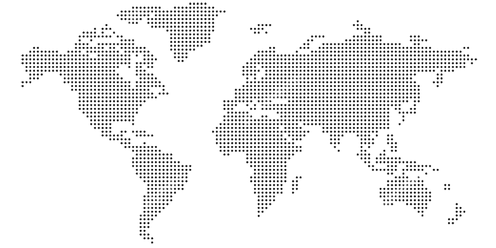

<div class="outter">
    <div id="map-container">
        
    </div>
    
</div>

<style>
    .outter {
        width: 500px;
        height: 500px;
        overflow: hidden;
        position: relative;
    }

    img.globe {
        position: absolute;
        top: 0;
        left: 0;
    }

    #map-container {
        position: absolute;
        width: 1000px;
        height: 500px;
        display: flex;
        transform: rotate(-23deg) scale(1.05) translate(0px, -50px);
    }

    .map {
        position: absolute;
    }
</style>

<script>

    let mapContainer = document.getElementById("map-container");
    let map = document.getElementById("map");
    let next = map.cloneNode(true);
    next.id = 'next';
    mapContainer.prepend(next);
    let position = 0;
    setInterval(function () {
        position++;
        map.style.left = position + 'px';
        next.style.left = position - 1000 + 'px';
        if (position >= 1000) {
            map.remove();
            next.id = 'map';
            map = document.getElementById("map");
            next = map.cloneNode(true);
            next.id = 'next';
            mapContainer.prepend(next);
            position = 0;
        }
    }, 10);

</script>

</html>